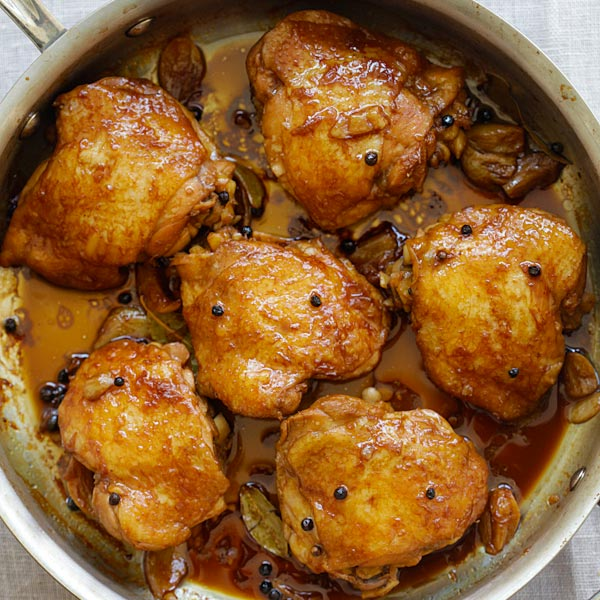

Chicken Adobo

Ingredients:
- Salt
- Whole Pepper
- Soy Sauce
- Vinegar
- Chicken Thighs
- Oil
- Water
- Garlic
- Dried Bay Leaves
Steps:
- In a big pan, stir fry the garlic in oil until golden brown, add the salt and whole pepper.
- Add the chicken, give it a bit more of a stir fry until browning.
- Add your soy sauce and water, as well as the bay leaves, cover and let simmer.
- Now add your vinegar and let it simmer for 15-30 minutes, do not stir.
- Cook your chicken until tender, add water as needed.
- Once chicken is tender serve on a nice dish, enjoy.